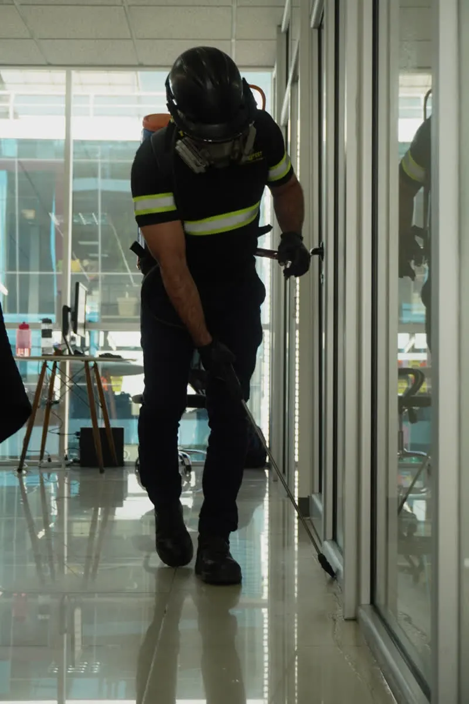
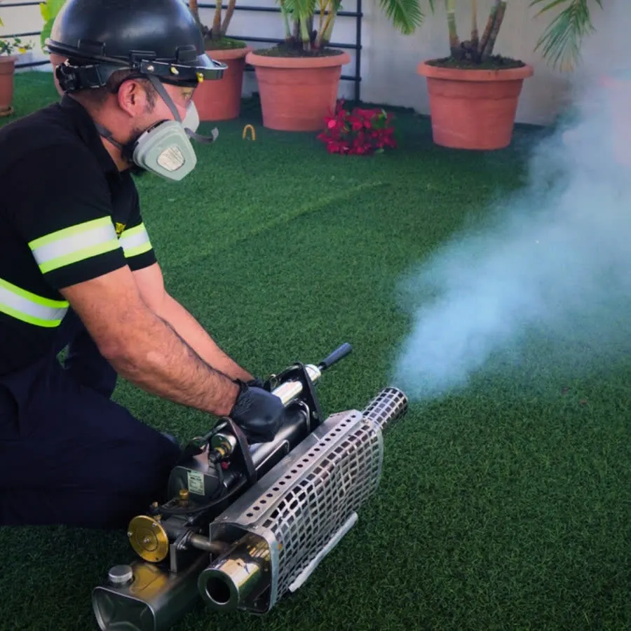
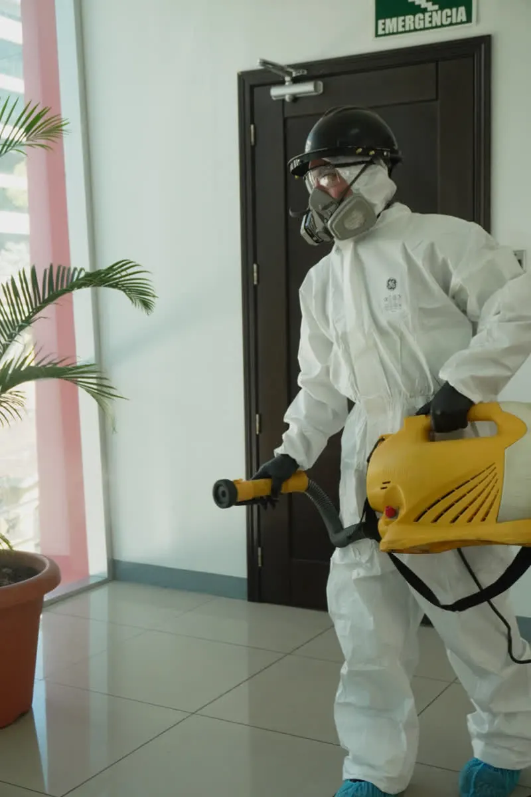
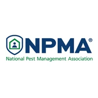
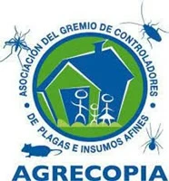

Auditorías
Llegas con todo en orden
Reporte firmado en cada visita: productos, áreas, hora de entrada y de salida. Además, una carpeta técnica con fichas, hojas de seguridad y registros sanitarios, lista para el auditor.
Control de plagas para empresas · Guatemala
Para restaurantes, bodegas, plantas, edificios y oficinas. Primero encontramos por dónde entra la plaga. Después la controlamos en tu horario y te dejamos un reporte firmado en cada visita.
4 datos · menos de un minuto · te llamamos nosotros

01 · Síntomas
Si marcas una, no es mala suerte: la plaga tiene una entrada que nadie ha encontrado.
Marcaste 0 de 4. Eso tiene solución. Cuéntanos y te cotizamos
02 · Cómo trabajamos
Echar químico sin saber por dónde entra la plaga es pagar dos veces. Por eso son 4 pasos.
01
Vemos qué plaga hay, dónde se esconde y por dónde entra.

02
Medimos qué tan grave es (alto, medio o bajo) y elegimos el tratamiento para ese espacio.

03
En tu horario, con productos con registro sanitario y nebulización ULV, estaciones o lámparas UV según el caso.

04
Volvemos cada quince días o cada mes. Si la plaga reaparece entre visitas, mandamos un refuerzo.
03 · Lo que ganas
Auditorías
Reporte firmado en cada visita: productos, áreas, hora de entrada y de salida. Además, una carpeta técnica con fichas, hojas de seguridad y registros sanitarios, lista para el auditor.
Operación
Vamos en el horario que menos afecta tu cocina, tu bodega o tu planta.
Tiempo
Te atendemos en 24 horas o menos. En emergencias en la capital, en menos de 1 hora.
Prevención
Capacitamos a tu personal sin costo, en persona o en línea, para que la plaga no encuentre comida ni entrada.
04 · Tipos de negocio
05 · Respaldo
Licencia sanitaria y licencia ambiental. Miembros de:


06 · Quién entra a tu negocio
Somos parte de The People Company y salimos todos los días desde la Zona 13 de la capital.
| Coordinador de operaciones | 1 |
|---|---|
| Supervisores | 3 |
| Técnicos con diploma del Ministerio de Salud | 7 |
07 · Antes de decidir
No. Trabajamos por áreas y en tu horario de menos movimiento. Solo pedimos que nadie esté en el área tratada y esperar 1 hora para volver a entrar.
Usamos productos con registro sanitario. La ficha técnica y la hoja de seguridad de cada uno quedan en tu carpeta, para ti y para el auditor.
Puede pasar: las plagas también entran con cajas y mercadería. Si reaparece entre visitas, mandamos un refuerzo.
Depende del tamaño, la plaga y cada cuánto vamos. Te damos el precio exacto sin costo. La visita cuesta lo mismo suelta o dentro de un plan.
08 · El programa para empresas
Preferimos decírtelo antes que cobrarte un servicio que no es el nuestro.
Dónde damos servicio
09 · Preguntas
¿Tu duda no está aquí? Escríbela en el formulario y te la contestamos al llamarte.
Normalmente te atendemos en 24 horas o menos. En emergencias dentro de la capital llegamos en menos de 1 hora. De lunes a jueves hay más espacio en la agenda.
Por transferencia bancaria y con factura. Por seguridad, nuestros técnicos no reciben efectivo ni cheques.
Nadie puede garantizarlo con honestidad. Lo que sí hacemos: si reaparece entre visitas, mandamos un refuerzo, y te decimos qué cambiar (limpieza, entradas, almacenaje) para que no encuentre dónde quedarse.
Sí. Las casas tienen indicaciones propias, por ejemplo cuánto tiempo deben estar fuera las mascotas. Están en la página de fumigación de casas.
Sí, en Quetzaltenango y Antigua Guatemala, y evaluamos otros lugares. Fuera de la capital el precio incluye viáticos.
10 · Cotización sin costo
¿Prefieres llamar? 2307-4727